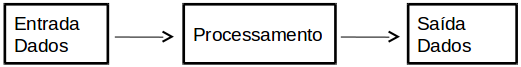
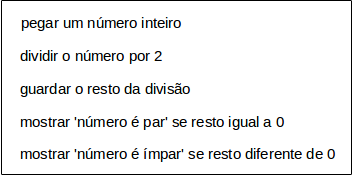
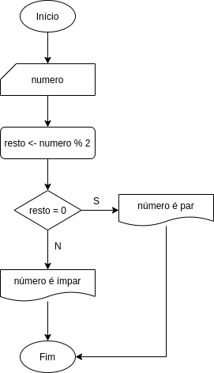
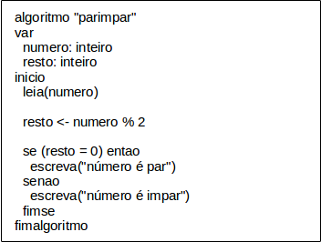

A lógica de programação é uma disciplina que apresenta elementos e recursos necessários para a construção do conhecimento utilizado na criação de programas de computador. Os elementos e recursos básicos da lógica de programação são:
Um programa de computador é uma sequência de passos ordenados logicamente para que uma determinada tarefa seja executada pelo computador. Exemplos de programas de computador:
Um outro nome dado ao programa de computador é algoritmo. Normalmente um programa de computador é formado por vários algoritmos, que juntos possibilitam a execução de uma determinada tarefa.
Todo algoritmo possui uma estrutura composta por três elementos: entrada de dados, processamento e saída de dados. A figura abaixo ilustra como os elementos de um algoritmo estão organizados.
Um algoritmo pode ser representado de três formas diferentes. A primeira é através de uma descrição narrativa, a segunda forma é utilizando fluxograma e a terceira forma é através do uso de pseudocódigo.
Na descrição narrativa é utilizado o idioma natural, por exemplo o Português. Esta representação é muito utilizada em esboços iniciais de um algoritmo. É fácil de utilizar, é simples, mas tem o problema da ambiguidade. O exemplo abaixo mostra a utilização da descrição narrativa para criar um algoritmo que verifica se um determinado número é par ou ímpar.
No fluxograma é utilizado um conjunto de elementos gráficos para representar o algoritmo. Os elementos gráficos são: elipses, retângulos, losangos e linhas com setas em uma das extremidades. O exemplo abaixo mostra um algoritmo representado por fluxograma.
O pseudocódigo é a forma de representação que mais se aproxima de uma linguagem de programação. O exemplo abaixo mostra a utilização do pseudocódigo.
